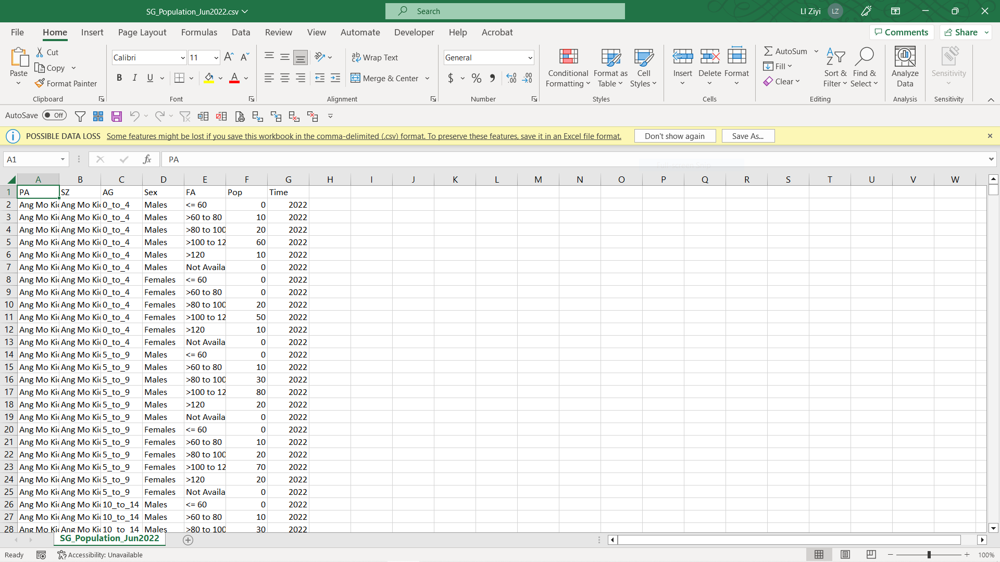

Take-home Exercise 01
1 Introduction
In this exercise, the basic demographic structure of Singapore top 9 biggest planning areas categorised by gender and age group is being studied.
Data used is a csv file extracted from Department of Statistics, Singapore. The population data snapshot from June 2022 is being studied mainly.
2 Data Preparation
2.1 Data Cleaning
Preview the downloaded csv file, the data looks generally clean with no “Total” elements inside all columns. This is specifically checked to ensure there won’t be double counting from aggregation blended inside. Inside Tableau, if needed, total could be easily computed by summing up all the rest data.

2.2 Data Loading
Open a new Tableau workbook and import data using the csv file prepared above.
For easier data manipulation later on, some columns were renamed for easier understanding and convenient usage, e.g. ‘AG’ to ‘Age Group’, ‘Pop’ to ‘Population’ etc.
3 Data Visualisation
Age-sex pyramid was taught be an analytical visualisation commonly used by demographers to reveal the structure of population by gender and age group.
3.1 Overall Singaporean Population Pyramid
Two calculated fields are created to facilitate the visualisation preparation:
Male:
if [Sex]="Males"
then [Population]
end
Female:
if [Sex]="Females"
then [Population]
endTo produce the desired visualisation, follow below steps:
Drag the ‘Age Group’ from Data panel into Rows bar.
Sort the ‘Age Group’ by clicking the white downwards pointing arrow, choose ‘Sort’ and sort by ‘Alphabetic’ in descending order.
Drag the line item ‘5_to_9’ inside the worksheet from ‘Age Group’ column to one line above ‘0_to_4’. With this, the age group should have been sorted in a descending manner entirely.
Drag the ‘Population’ from Data panel into Columns bar twice. Two ‘SUM(Population)’ should be seen in Columns’ bar. This step is to facilitate the pyramid making. Whereby the left side will be intended to use for female population visualisation and the right side will be intended to use to male population visualisation.
Right click the axis of the ‘Population’ on the left and edit axis. Choose the option of ‘Reversed’ under ‘Scale’. This will reverse the axis on the left. Rename the axis on the left to ‘Female’.
Right click the axis on the right. Edit the axis and rename it to ‘Male’.
There is a pyramid shape built now. Proceeding next to isolate each gender’s population from the other.
Create two newly calculated measures named ‘Male Color’ and ‘Female Color’. This is to facilitate the visualisation of pyramid later.
Male Color: str(if [Sex]="Males" then 1 else 0 end) Female Color: str(if [Sex]="Females" then 1 else 0 end)Drag the ‘Female Color’ from Data panel into Marks section under the ‘Color’ button from the first ‘SUM(Population)’. Choose a color that you would like to assign to Female population data (1). Here, color pink is used. When the data is not ‘Female’ (0), color grey is used.
Similarly, drag the ‘Male Color’ from Data panel and do the same but put it under under the second ‘SUM(Population)’. Choose a color that you would like to assign to Male population data (1). Here, color blue is used. When the data is not ‘Male’ (0), color grey is used to align with the color used in ‘Female Color’.
For better analysis usage, under ‘Marks’ section for both ‘SUM(Population)’, ‘Allow labels to overlap other marks’ is chosen under ‘Label’. This will enable us to see all population data on the chart.
Choose ‘Entire View’ on the top menu to allow bigger chart being presented when in full screen mode.
Rename the tab with an informative title.
Therefore, a population pyramid of Singapore has been completed. See below.

3.2 Selection of Nine Planning Areas
For this take-home exercise, nine planning areas are supposed to be chosen and presented on a single view.
To find out which nine areas to work on, it’s more of my interest to filter based on each of their total population. Below actions are taken in order to achieve that.
Create a new worksheet.
Drag the ‘Population’ values from Data panel into Columns bar.
Drag the ‘Planning Area’ text from Data panel into Rows bar.
Sort the ‘Planning Area’ by clicking the white downwards pointing arrow, choose ‘Sort’ and sort by ‘Field’ in descending order. Choose the field to be sorted by ‘Population’ from the drop-down list. The aggregation we use here remains ‘Sum’.
This would enable us to visualise the top planning areas according to each of their total area population. To make the list of top area more clearly, parameters and additional calculated fields are created.
Creation of parameter ‘Top Planning Areas’.

Creation of set ‘Top N Planning Area’ derived from item ‘Planning Area’ from the Data panel by right clicking it:

Creation of calculated field ‘Labels’. This label is to be displayed inside the table later for easier readability.
if [Top N Planning Area]
then "Top " + str([Top Planning Area]) + " Planning Areas"
else "Others"
endWith these, below chart is completed.

From here, the nine areas that are chosen to study on are:
Bedok,
Tampines,
Jurong West,
Sengkang,
Woodlands,
Hougang,
Yishun,
Choa Chu Kang,
Punggol.
3.3 Trellis Display of Population Pyramid of The Nine Planning Areas
In this exercise, the nine planning areas are requested to be presented on a single view. To do that, a trellis display will be applied. Following below steps that will lead us to the desired output.
Duplicate the worksheet ‘PA comparison of Female and Male population in Singapore broken down by age group 2022’.
Rename the worksheet to ‘Trellis comparison of Female and Male population in Top 9 Population Areas of Singapore broken down by age group 2022’.
Drag the ‘Planning Area’ text from Data panel into Columns bar.
Drag the ‘Planning Area’ text from Data panel into Filters section and tick the chosen nine areas only.
The trellis display is therefore completed.
3.4 Final Dashboard
The final dashboard is produced by putting together the three important worksheets. Here, three worksheets have been chosen to present together in one view to complete the whole story.

4 Observation and Insights
This part is the write-up requested. Words count: 447 words.
4.1 “Constrictive” pyramid (or “negative growth” pyramid)
The population pyramid of Singapore observed from the figure above is narrowed at the bottom younger ages, typical for many developed countries in the world. Usually, country of this population pyramid type tends to have a lower birth rate and a lower death rate thanks to prevalent high level of education and accessible health care services.
This observation is in line with many incentive measures from the government seen, for example, policies like birth bonuses, child benefits and even tax credits.
4.2 The population pyramid of Singapore from 2022 remains like the one from 2017.
From this link shared by prof, the population pyramid of Singapore in 2022 still look very alike in how it was in 2017, despite of much effort from government on improving fertility rate.
This is indeed a concerning topic. Such constrictive pyramid indicates a higher dependency ratio (a ratio related to the number of children and older persons to the working-age population), which implies potential work force shortage in the future. Consequentely, that might result in seriously negative economic impact like reduction in taxation and heavier burden on health care industry.
4.3 Females outnumber males in Singapore Based on June 2022 data.
This trend is observed in majority age groups. Zooming into each group, only for age 19 and below, number of males is observed to be higher. This trend is observed in majority age groups. Zooming into each group, only for age 19 and below, number of males is observed to be higher. The trend also applies to the nine areas that we have chosen to study on. Without more than sufficient research, there are some unproved personal assumptions that might lead to this result:
Males tend to have a higher mortality rate especially at an older age group, mainly due to higher probability of possessing an unhealthy life habit like smoking or heavy drinking.
A possible relatively higher rate of approval for immigration applications from foreign young females. This might account for some partial efforts from government on improving the fertility rate of Singapore.
4.4 Punggol and Sengkang each has slightly different population pyramid from the rest of chosen areas’.
Thanks to the Trellis plot, a comparison between the nine areas looks much easier. From the dashboard, Punggol and Sengkang seem to have a relatively larger base (newly born babies) and middle part (working adults) than the rest. This observation tends to prove the point of view that these two areas tend to have higher percentages of young working couples and babies. Hence, Punggol has recently been dubbed as Singapore’s baby town, according to a news report from The Straits Times.
5 Reflection
This is my first attempt on building and publishing . Along the journey, I have been learning from many of my mistakes. E.g. only after building the whole dashboard, I realised there was better data set for me to use and work on (csv preferred over xlsx, if both available). And the very first draft of dashboard looked decent but was only as good as a graph that can be viewed but cannot be analyzed with. Countless attempts of rework and revised versions were created, with much practice time invested.
Nevertheless, I am excited of this continuous learning journey ahead. I look forward to improving my analytics skills using Tableau and R to further improve this exercise with more depth.